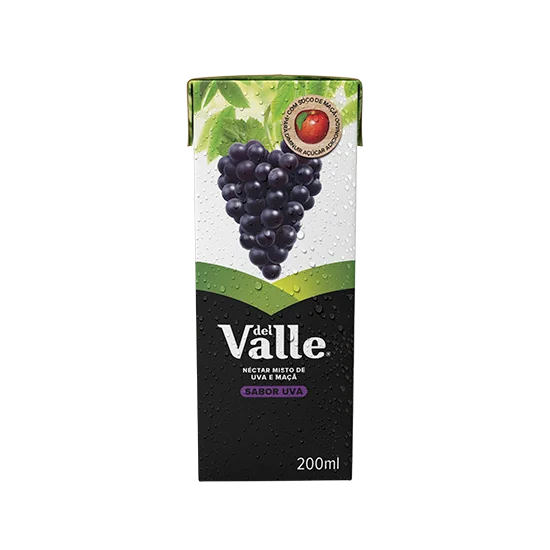

COCA-COLA
BEBIDAS CARBONATADAS
Coca-Cola é a bebida mais vendida na história desde 1886. É a maca mais famosa do mundo. Bem fria, te
faz disfrutar cada momento da vida, já que dá magia em cada momento.
MONSTER
BEBIDAS ENERGÉTICAS
Prove uma das bebidas mais extremas do planeta: Monster Energy! É uma mistura radical com uma combinação
ideal de ingredientes com as proporções exatas para oferecer o Monster "Buzz" que os nossos fãs do
México gostam tanto. Monster tem um sabor intenso, mas suave. É adorada pelos atletas, surfistas,
músicos, skaters, riders, geeks, e hipsters... então temos certeza que você vai adorar.

DEL VALLE
SUCOS E NÉCTARES
Del Valle é uma marca mexicana com mais de 70 anos que oferece o bom do suco de fruta através dos seus
sucos, néctares, bebidas com polpa e bebidas refrescante. Essa marca tem suas raízes no México e se
comercializam em países como o Brazil, a Colômbia, a Venezuela e outras nações da América Central. Além
disso, as bebidas Del Valle são outra opção do nosso portfólio que podem contribuir nutrição à dieta
diária.
.png)
Eventos
Parceria com os Jogos Olímpicos
COCA-COLA
Desde sua criação, há mais de 135 anos, a Coca-Cola compartilha os valores universais de excelência, amizade
e respeito incorporados no esporte e no Olimpismo. A parceria da Coca-Cola com o Movimento Olímpico começou
em 1928, tornando-a sua patrocinadora mais antiga.
Quem Somos Nós
MISSÃO, VISÃO E VALORES
Satisfazer com excelência a nossos consumidores de bebidas.
Ser líder total de bebidas, gerando valor econômico, social e ambiental sustentável, gerenciando modelos de
negócio inovadores e ganhadores, com os melhores colaboradores do mundo.
São a chave para guiar nosso conduta. Eles expressam quem somos e no que acreditamos.
FAQ
Quais os ingredientes do produtos?
Os ingredientes da Coca-Cola Brasil podem variar de acordo com o produto específico, mas geralmente incluem
água carbonatada, açúcar (ou adoçantes), extrato de folha de coca, cafeína, ácido fosfórico, corante
caramelo e aromatizantes naturais, como limão, laranja e baunilha.
Qual a diferença da coca-cola zero para a tradicional?
A principal diferença entre a Coca-Cola Zero e a Coca-Cola tradicional está no teor de açúcar e calorias.
Enquanto a Coca-Cola tradicional contém açúcar e calorias, a Coca-Cola Zero é uma versão sem açúcar e com
baixas calorias, substituindo o açúcar por adoçantes artificiais, como o aspartame e a sucralose. Ambas
oferecem o sabor característico da Coca-Cola, mas a Coca-Cola Zero é direcionada para aqueles que desejam
uma opção com menos calorias.
Por que a variedade de preços?
A variedade de preços dos produtos da Coca-Cola Brasil pode ser atribuída a vários fatores, incluindo custos
de produção, logística, distribuição, concorrência no mercado, demanda dos consumidores e estratégias de
marketing. Além disso, diferentes regiões e canais de venda podem ter preços variados devido a diferenças
nos custos operacionais e nas preferências dos consumidores locais. A Coca-Cola Brasil busca oferecer uma
variedade de opções de produtos e preços para atender às necessidades e preferências dos consumidores em
diferentes segmentos de mercado.